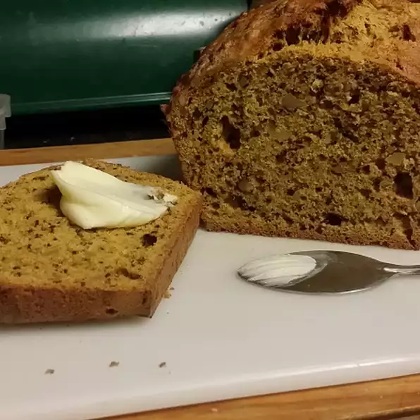

Bread

Carrot Bread
This carrot bread is really a cross between cake and a loaf of bread. Serving it warm with butter or cream cheese is ideal. It's really good!
Ingredients
- 2½ cups all-purpose flour
- 1 cup white sugar
- 1 teaspoon baking powder
- 1 teaspoon ground cinnamon
- 3 eggs, beaten
- 1 (3.5 ounce) package flaked coconut
- 2 cups shredded carrots
- ½ cup maraschino cherries, chopped
- ½ cup chopped walnuts
Steps
- Preheat the oven to 350 degrees F (175 degrees C). Lightly grease a 9x5-inch loaf pan.
- In a large bowl, sift together flour, sugar, baking powder, baking soda, cinnamon, and salt. Combine eggs, oil, and milk; stir into flour mixture until well blended. Stir in carrots, coconut, cherries, raisins, and walnuts. Pour batter into prepared pan.
- Bake in the preheated oven 50 to 60 minutes, or until a toothpick inserted into center of the loaf comes out clean. Let cool on a wire rack for 10 minutes before removing from the pan to cool completely. Store in plastic wrap to keep moist.